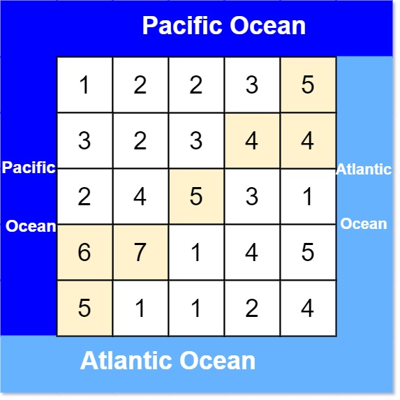

417. 太平洋大西洋水流问题
水往低处流难逐格判断，反过来：从两片海的边界「逆流而上」（只走高处）各做一次 DFS 标可达格，两张标记表的交集就是答案。
思路
- 逐格正向 BFS 太慢；反向只做两遍：从海的边界出发，逆流而上走到
>=当前高度的邻居。 - 太平洋从上、左边界出发，大西洋从下、右边界出发，各标一张
boolean表。 - 两表都为真的格就是答案，按行优先顺序输出。
图解
最优解
1import java.util.*;2 3class Solution {4 private static final int[] DR = {1, -1, 0, 0}, DC = {0, 0, 1, -1};5 private int m, n;6 private int[][] h;7 private boolean[][] pac, atl;8 9 public List<List<Integer>> pacificAtlantic(int[][] heights) {10 h = heights;11 m = heights.length;12 n = heights[0].length;13 pac = new boolean[m][n];14 atl = new boolean[m][n];15 for (int r = 0; r < m; r++) { dfs(r, 0, pac); dfs(r, n - 1, atl); }16 for (int c = 0; c < n; c++) { dfs(0, c, pac); dfs(m - 1, c, atl); }17 List<List<Integer>> ans = new ArrayList<>();18 for (int r = 0; r < m; r++) {19 for (int c = 0; c < n; c++) {20 if (pac[r][c] && atl[r][c]) ans.add(Arrays.asList(r, c));21 }22 }23 return ans;24 }25 26 /** 从海洋边界「逆流而上」：只走到高度 >= 当前格的相邻格（显式栈，避免大图递归爆栈）。 */27 private void dfs(int r, int c, boolean[][] sea) {28 if (sea[r][c]) return;29 sea[r][c] = true;30 Deque<int[]> stack = new ArrayDeque<>();31 stack.push(new int[]{r, c});32 while (!stack.isEmpty()) {33 int[] cur = stack.pop();34 for (int d = 0; d < 4; d++) {35 int nr = cur[0] + DR[d], nc = cur[1] + DC[d];36 boolean in = nr >= 0 && nr < m && nc >= 0 && nc < n;37 if (in && !sea[nr][nc] && h[nr][nc] >= h[cur[0]][cur[1]]) {38 sea[nr][nc] = true;39 stack.push(new int[]{nr, nc});40 }41 }42 }43 }44}题目
有一个 m × n 的矩形岛屿，与 太平洋 和 大西洋 相邻。 “太平洋” 处于大陆的左边界和上边界，而 “大西洋” 处于大陆的右边界和下边界。
这个岛被分割成一个由若干方形单元格组成的网格。给定一个 m x n 的整数矩阵 heights ， heights[r][c] 表示坐标 (r, c) 上单元格 高于海平面的高度 。
岛上雨水较多，如果相邻单元格的高度 小于或等于 当前单元格的高度，雨水可以直接向北、南、东、西流向相邻单元格。水可以从海洋附近的任何单元格流入海洋。
返回网格坐标 result 的 2D 列表 ，其中 result[i] = [ri, ci] 表示雨水从单元格 (ri, ci) 流动 既可流向太平洋也可流向大西洋 。
示例 1：

输入: heights = [[1,2,2,3,5],[3,2,3,4,4],[2,4,5,3,1],[6,7,1,4,5],[5,1,1,2,4]] 输出: [[0,4],[1,3],[1,4],[2,2],[3,0],[3,1],[4,0]]
示例 2：
输入: heights = [[2,1],[1,2]] 输出: [[0,0],[0,1],[1,0],[1,1]]
提示：
m == heights.lengthn == heights[r].length1 <= m, n <= 2000 <= heights[r][c] <= 105
题面取自力扣当前版本。
数据快照 2026-11-04。题面版权归力扣所有，本站点仅供本人学习使用，请勿对外发布。